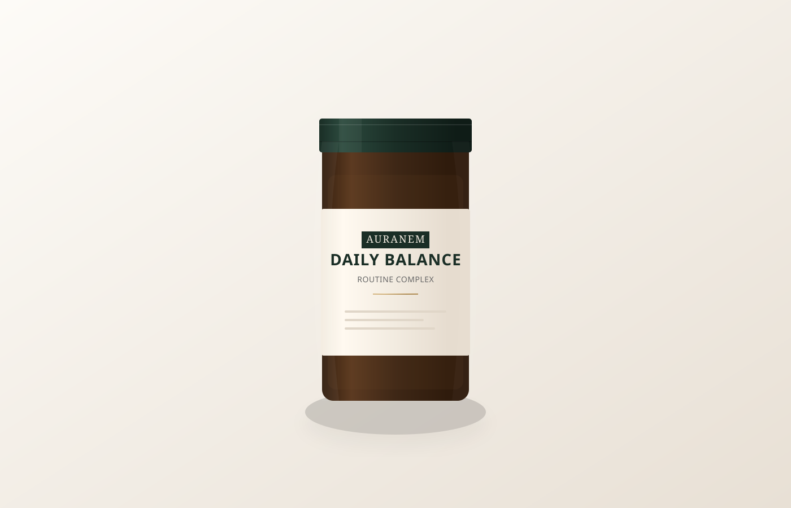
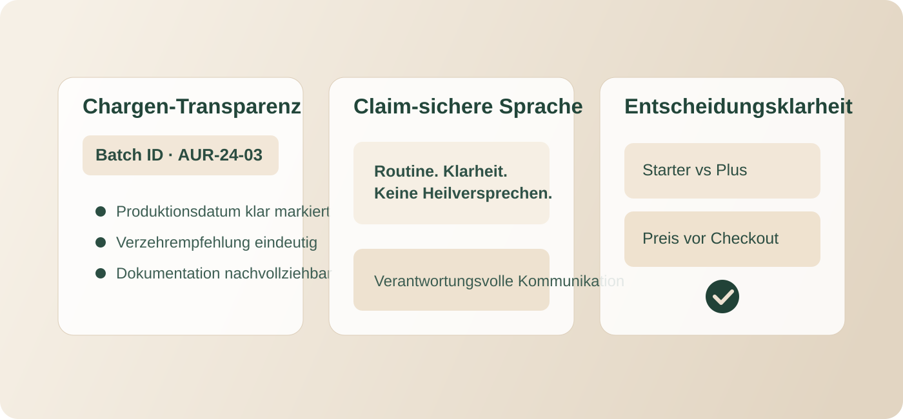
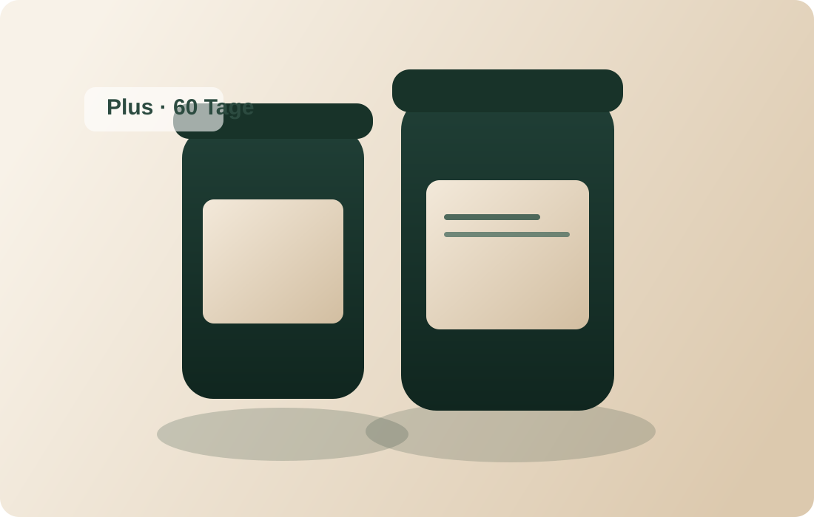
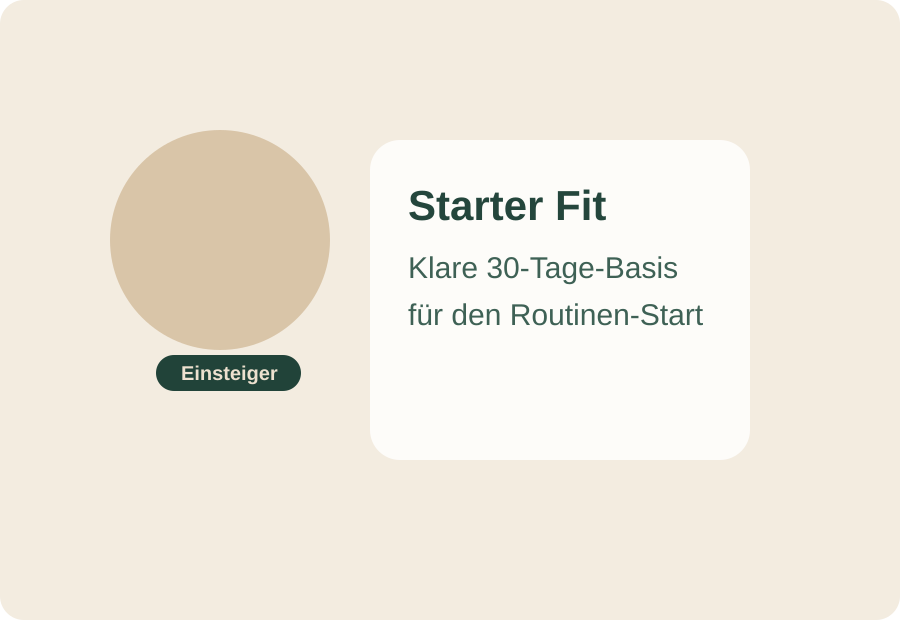
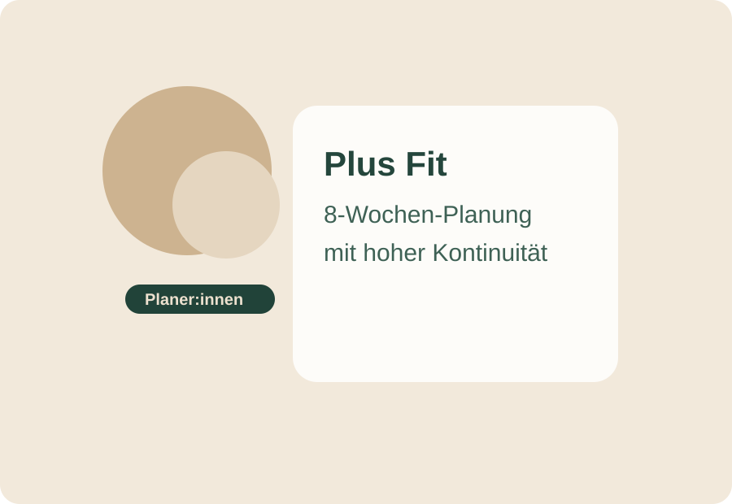
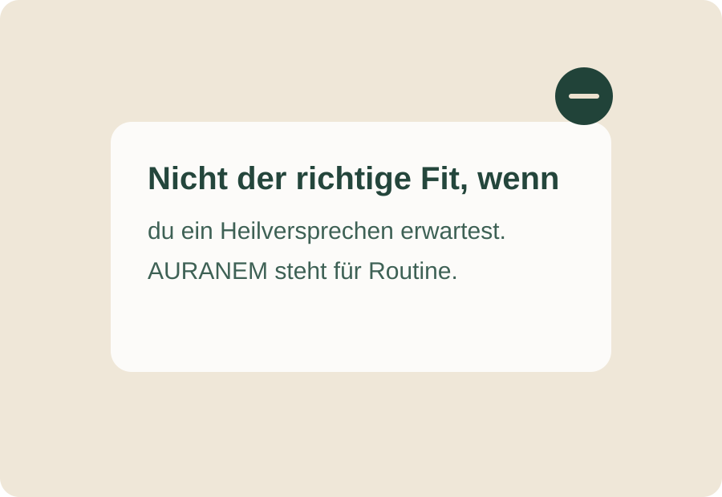
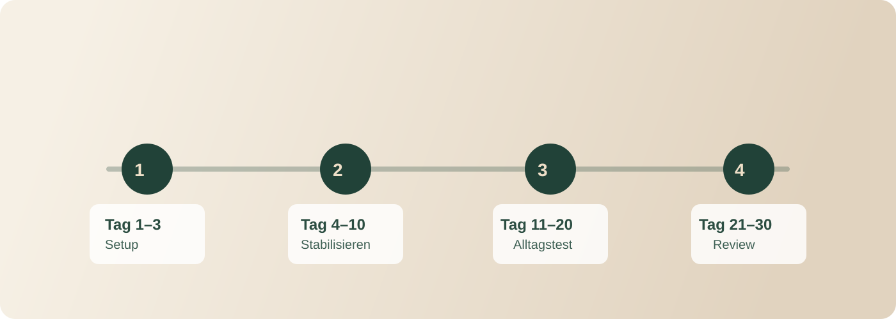
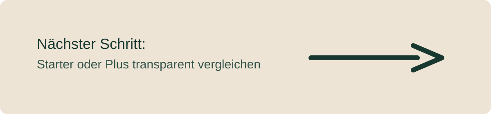

Starter · 30 Tage
ab €89*
Starter direkt öffnen →Daily Balance Starter · 30 Tage
Starte mit 30 oder 60 Tagen Konstanz. Prüfe alle Details transparent vorab und entscheide ohne Abo-Bindung erst im nächsten Schritt.
Wähle den schnellsten Einstieg für dein Ziel:
Unverbindlich prüfen: Der Klick führt zur Auswahl, nicht zum direkten Kauf. Volle Transparenz vorab.
Vor dem ersten Klick kurz geklärt:
Nein. Beide Optionen sind Einzelkäufe ohne automatische Verlängerung.
Ja. Preis und Inhalte sind vor der aktiven finalen Bestätigung transparent sichtbar.
Nein. AURANEM kommuniziert bewusst ohne medizinische Heil- oder Krankheitsclaims.
In 10 Sekunden entscheiden:
Starter · 30 Tage
ab €89*
Starter direkt öffnen →Plus · 60 Tage
ab €149*
Plus direkt öffnen →Plus spart ca. €0,49 pro Tag vs. Starter (bei 60 Tagen) — für mehr Kontinuität mit weniger Nachkaufdruck.
Unsicher beim Einstieg? Dann starte mit dem 30-Tage-Starter →
Empfohlener Start für Erstbesucher:innen
Wenn du noch vergleichst: nimm den Starter. So testest du 30 Tage strukturiert ohne Abo-Bindung und entscheidest danach bewusst, ob Plus für dich sinnvoll ist.
Mit Starter unverbindlich beginnen (ab €89)
Atlas Seal Northstar · Chargen-Transparenz · Ohne Heilversprechen · Preis transparent vor Checkout
Du entscheidest dich bewusst für Starter oder Plus statt täglich neu zu improvisieren.
Du verknüpfst die Einnahme mit einem klaren Trigger (z. B. Frühstück), damit sie planbar wird.
Du folgst einem einfachen Wochenrhythmus mit Checkpoints statt „Neustart jeden Montag“.


Markenkennung: Atlas Seal Northstar Gewinnerzeichen als konstantes Qualitäts- und Herkunftssignal.
★★★★★
„Endlich eine Routine, die ich wirklich durchhalte. Das 30-Tage-Konzept hat mir geholfen, morgens konsequent zu bleiben.“
— Michael K., Starter-Kunde
★★★★★
„Schmeckt angenehm natürlich und die Lieferung war extrem schnell. Fühle mich gut betreut.“
— Sabine L., Plus-Kundin
★★★★★
„Ich schätze die Transparenz. Kein Abo-Dschungel, sondern einfach bestellen, wenn ich es brauche. Top Qualität.“
— Thomas H., Starter-Kunde
Schnelle Entscheidungshilfe: Du siehst vor dem Klick klar Preis, Umfang und nächsten Schritt.
Empfohlen zum Start
UVP €119 ab €89*
ca. €2,97 pro Tag bei 30 Tagen
*Aktionspreis im aktuellen Angebotszeitraum.
Für alle, die eine einfache, stabile Basisroutine für den Alltag aufbauen wollen.
Im nächsten Schritt siehst du Preis & Inhalte klar vor der finalen Bestätigung.

Für längeren Horizont
UVP €189 ab €149*
ca. €2,48 pro Tag bei 60 Tagen
Plus Vorteil: ca. €0,49 weniger pro Tag vs. Starter (bei 60 Tagen)
Wenn du ohnehin 60 Tage planst: 2× Starter kosten €178 — Plus liegt bei €149 (≈ €29 weniger).
*Aktionspreis im aktuellen Angebotszeitraum.
Für Nutzer:innen, die direkt für 8 Wochen planen und weniger Nachkauf-Reibung wollen.
Im nächsten Schritt siehst du Preis & Inhalte klar vor der finalen Bestätigung.
Schnellstart (wenn du sofort weißt, was passt):
Du springst direkt zur passenden Karte und prüfst dort alle Details vor dem finalen Schritt.
Was passiert nach „unverbindlich prüfen“?
Wichtige Kaufinfos in Klartext (vor dem Checkout):
Nur 3 Schritte bis zur finalen Entscheidung
Direktvergleich in 1 Blick
Starter
Plus
Wenn du nur 15 Sekunden hast: Das ist der Unterschied.
Starter
Plus
Laufzeit
30 Tage
60 Tage
Gesamtpreis
ab €89
ab €149
Preis pro Tag
ca. €2,97
ca. €2,48
Passt, wenn …
du zuerst strukturiert starten und danach neu entscheiden willst
du direkt 8 Wochen durchplanen und ca. €29 gegenüber 2× Starter sparen willst
Abo?
Nein
Nein
Wähle den kürzesten Weg zu deiner Entscheidung:
Noch unklar? 1 Klick zur Empfehlung:
Empfehlung: Starter für einen klaren 30-Tage-Einstieg ohne Abo-Bindung.
Empfehlung öffnen: Starter →Unsicher beim Einstieg? Starte mit dem 30-Tage-Starter und entscheide danach neu — ohne Abo-Bindung. Wie das funktioniert →
Schnelle Empfehlung bei Unsicherheit
Nimm den Starter, wenn du noch vergleichst. Du bekommst einen klaren 30-Tage-Start ohne Abo und kannst danach bewusst auf Plus erweitern.
Empfohlenen Start öffnen →Noch unentschlossen? Starte mit dem 30-Tage-Starter als risikoarmen Standardpfad ohne Abo und entscheide danach bewusst, ob Plus sinnvoll ist.
Empfohlenen Starter jetzt öffnen →Noch unsicher? Das sind die drei häufigsten Fragen direkt vor dem Klick:
Nein. Beide Optionen sind Einzelkäufe ohne automatische Verlängerung.
Nein. Du siehst Preis und Inhalte transparent im nächsten Schritt und bestätigst erst dann aktiv.
Ziel ist eine strukturierte Routine im Alltag. AURANEM macht keine Heil- oder Krankheitsversprechen.
Versand nach AT/DE dauert meist 2–4 Werktage. Für ungeöffnete Ware gilt ein 14-tägiges Widerrufsrecht.
Hinweis: Preise und Verfügbarkeit können je nach Angebotszeitraum variieren.

erstmals eine feste Supplement-Routine etablieren willst und einen klaren 30-Tage-Start suchst.

schon weißt, dass du mindestens 8 Wochen durchziehen willst und Unterbrechungen vermeiden möchtest.

ein medizinisches Heilversprechen erwartest. AURANEM ist auf Routine und Eigenverantwortung ausgelegt.

Tag 1–3
Festen Einnahmezeitpunkt wählen, Erinnerung setzen, Startanleitung durchgehen.
Tag 4–10
Routine ohne Optimierungsstress halten und erste Woche vollständig abschließen.
Tag 11–20
Routine auch an busy Tagen umsetzen (Reise/Office/Wochenende).
Tag 21–30
Selbstcheck abschließen und bewusst entscheiden: Starter wiederholen oder auf Plus erweitern.
Erwartungsrahmen: Ziel ist eine verlässliche Gewohnheit. Ergebnisse hängen von individueller Lebensweise und konsequenter Anwendung ab.
Ja. Die Anwendung ist bewusst klar und ohne unnötige Komplexität aufgebaut.
Für die Einnahme selbst nur wenige Minuten. Der eigentliche Hebel ist ein fester Tagesanker.
Nein. AURANEM kommuniziert verantwortungsvoll und macht keine Heil- oder Krankheitsclaims.
Ja. Starter und Plus sind klar getrennte Optionen, damit du eine informierte Entscheidung treffen kannst.
Wähle den 30-Tage-Starter oder das 60-Tage-Plus und setze deine Routine planbar um.

Starter: 30 Tage · ab €89 · ideal zum strukturierten Einstieg
Plus: 60 Tage · ab €149 · ca. €0,49/Tag günstiger vs. Starter
Noch unsicher? Starte mit dem 30-Tage-Starter als klaren Erstschritt →
Kein Plan gewählt? Starter ist der empfohlene Standard-Einstieg.
Direkt zur passenden Variante springen und Inhalte/Preis vor dem finalen Schritt prüfen.
Dein 30-Tage-Start (Kein Abo):
Lieber 60 Tage? Zu Plus (ab €149) →
Preis vor Checkout sichtbar · Plus spart ca. €0,49/Tag vs. Starter · 3 kurze Antworten →
Wähle deinen Start (Kein Abo):
Unsicher? Starte mit dem 30-Tage-Starter ohne Abo-Bindung · Preis und Inhalte vor finaler Bestätigung sichtbar · 3 kurze Antworten →